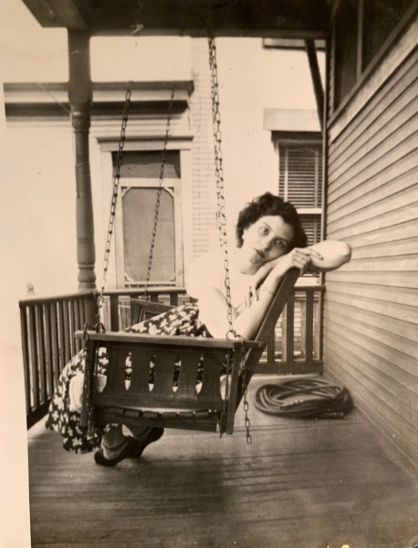
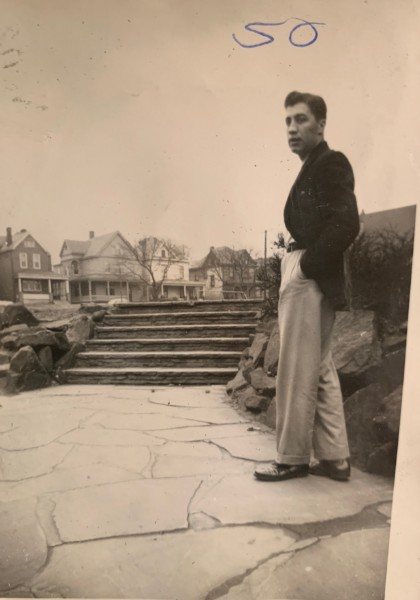
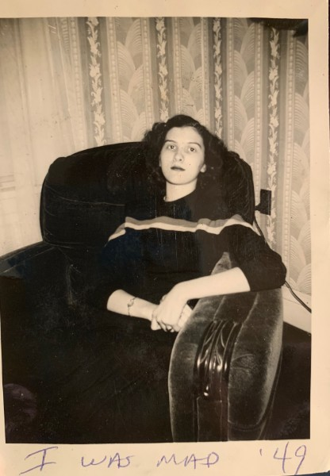

One day in 1950
Click to see my grandma.
Her name is Margaret, but she goes by Jean. She grew up in Monessen, Pennsylvania, and still lives there today.

Click to see my grandad.
His name was Eugene. He grew up in Monessen, Pennsylvania. His father moved to the United States from Abruzzo, Italy.

They were mad

Using four images of my father's parents, I learned how to make an interactive page using JavaScript events.
I took photos of these old polaroids at my grandmother's house. View my GitHub repo.